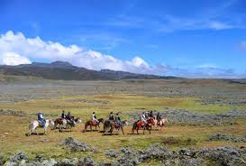
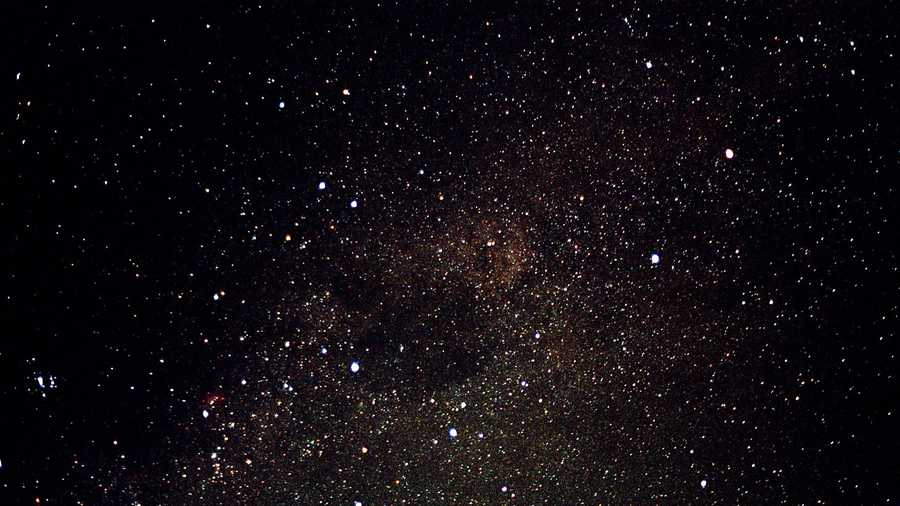
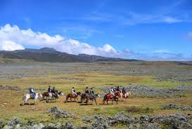
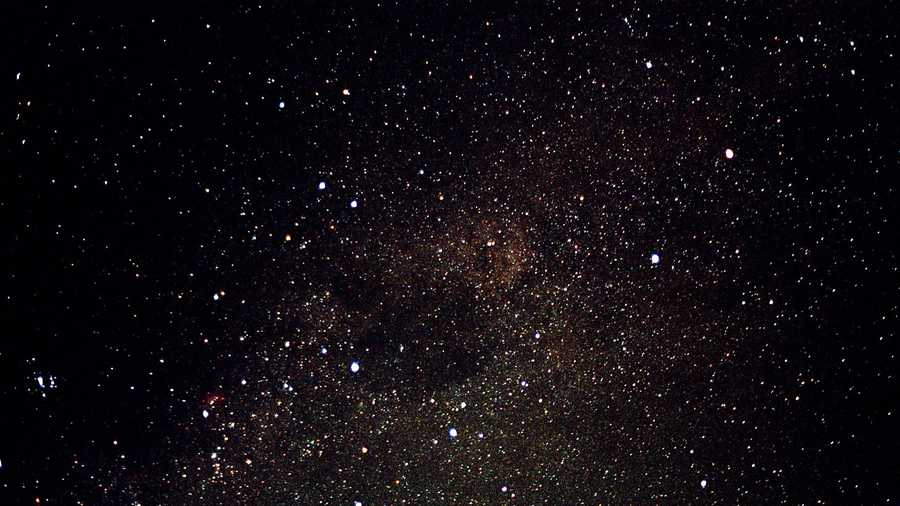

Astronomy and the Universe
I have a deep passion for astronomy; exploring the mysteries of the universe gives me a profound sense of purpose. There’s something incredibly awe-inspiring about the vastness and beauty of nature beyond our world. My journey in astronomy even led me to create a Telegram channel where I shared fascinating lessons and facts with over 10,000 subscribers.
If you're looking to spark your own interest, I highly recommend checking out the work of Neil deGrasse Tyson, especially his series like StarTalk and Cosmos. These resources bring the wonders of space closer to home.
 


